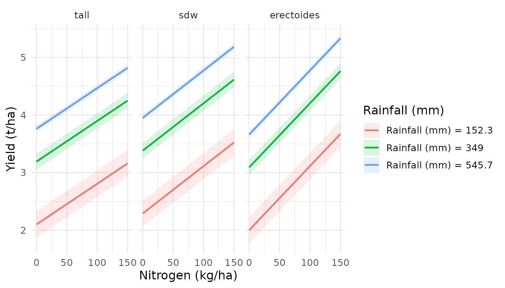

Introduction
Statistical models produce many types of “effects” — predictions, contrasts, slopes, treatment effects — each answering a different question. Traditional 2D plots show these effects along one variable at a time. But when two variables jointly influence an effect, critical patterns (interaction ridges, saddle points, optimal combinations) remain hidden.
effectsurf visualises five core effect types as
interactive 3D surfaces:
| Effect type | Question answered | effectsurf function |
|---|---|---|
| Predictions | What does the model predict at (x, y)? | surf_prediction() |
| Marginal effects (slopes) | How fast does the outcome change with x? | surf_slopes() |
| Treatment contrasts (ATE) | What is the average treatment effect? | surf_comparison() |
| Conditional treatment effects (CATE) | Where does the treatment work best? |
surf_comparison() /
surf_sensitivity()
|
| Interaction effects | Do two factors modify each other’s effect? | surf_prediction(by = ...) |
This vignette demonstrates each type with worked examples.
1. Predictions: What does the model expect?
A prediction surface shows the model’s fitted values across a grid of two continuous variables, with all other variables held at reference values (mean for numeric, mode for factors). This is the 3D extension of the classical estimated marginal means (EMMs).
When to use: Explore the overall response landscape. Identify where outcomes are highest/lowest. Compare response shapes between groups.
Example: Linear model (lm)
A simple linear model with interaction:
# Linear model: fuel efficiency as a function of weight, horsepower,
# and their interaction
m_lm <- lm(mpg ~ wt * hp + factor(cyl), data = mtcars)
es_pred_lm <- surf_prediction(
m_lm, x = "wt", y = "hp",
x_length = 30, y_length = 30,
labels = list(
x = "Weight (1000 lbs)", y = "Horsepower",
z = "Fuel efficiency (mpg)",
title = "Prediction surface (linear model)"
)
)
es_pred_lm
# Interactive 3D visualisation
plot(es_pred_lm)The linear model produces a planar surface (possibly tilted by the interaction term). Compare this with the flexible nonlinear surface from a GAM:
Example: GAM (mgcv)
# GAM: flexible nonlinear response surface
m_gam <- mgcv::gam(mpg ~ s(wt) + s(hp) + factor(cyl), data = mtcars)
es_pred_gam <- surf_prediction(
m_gam, x = "wt", y = "hp",
x_length = 30, y_length = 30,
labels = list(
x = "Weight (1000 lbs)", y = "Horsepower",
z = "Fuel efficiency (mpg)",
title = "Prediction surface (GAM)"
)
)
es_pred_gamThe GAM surface curves nonlinearly — it captures the diminishing effect of weight at higher horsepower that the linear model misses.
Example: Agricultural data — yield across nitrogen and rainfall
# Barley yield model with smooth rainfall effect and nitrogen as linear
m_barley <- mgcv::gam(
yield ~ s(rainfall, k = 5) + nitrogen + seedrate +
variety_type + state + nitrogen:variety_type +
s(trial, bs = "re"),
data = barley_trials,
method = "REML"
)
es_barley <- surf_prediction(
m_barley, x = "nitrogen", y = "rainfall",
x_length = 30, y_length = 30,
labels = list(
x = "Nitrogen applied (kg/ha)",
y = "April-October rainfall (mm)",
z = "Grain yield (t/ha)"
)
)
summary(es_barley)
#> Estimated Marginal Surface (EMS)
#> ================================
#>
#> Type: prediction
#> X var: nitrogen
#> Y var: rainfall
#> Z var: yield
#> Grid: 900 points
#> CI: TRUE
#> Transform: none
#>
#> Response summary (estimate):
#> Min: 2.1059
#> Median: 3.9342
#> Mean: 3.858
#> Max: 5.2341
#>
#> Model: gam/glm/lm
#> N obs: 32402. Marginal effects (slopes): How sensitive is the outcome?
A marginal effect (or slope) is the partial derivative of the predicted outcome with respect to a focal variable:
A slope surface shows how this derivative varies across a 2D grid of moderators. Regions where the slope is steep indicate high sensitivity; flat regions indicate the outcome barely responds to changes in .
When to use: Identify where a management input (e.g., nitrogen fertiliser) has the greatest impact. Quantify diminishing returns. Find the “sweet spot” where intervention is most efficient.
Example: Where does nitrogen matter most?
# How does the marginal effect of nitrogen on yield vary
# across rainfall and seed rate?
es_slopes <- surf_slopes(
m_barley,
x = "rainfall", y = "seedrate",
variable = "nitrogen",
x_length = 25, y_length = 25,
labels = list(
x = "April-October rainfall (mm)",
y = "Seed rate (plants/m\u00b2)",
z = "Marginal effect of N on yield (t/ha per kg N)",
title = "Where does nitrogen have the greatest impact?"
)
)
es_slopes
plot(es_slopes, colourscale = "RdBu")Interpreting the surface:
- Positive values (warm colours): adding nitrogen increases yield
- Near zero (white): nitrogen has little further effect (diminishing returns)
- Negative values (cool colours): excess nitrogen may reduce yield
- Higher values at higher rainfall: rain delivers nitrogen to roots, amplifying the N effect
Example: Slopes from a linear model
For a linear model without interactions, the marginal effect of a variable is constant across the covariate space — the slope surface is flat:
m_lm_noint <- lm(mpg ~ wt + hp + factor(cyl), data = mtcars)
es_slopes_lm <- surf_slopes(
m_lm_noint,
x = "wt", y = "hp",
variable = "wt",
x_length = 20, y_length = 20,
labels = list(z = "Marginal effect of weight on mpg")
)
# With no interaction, slope is constant
range(surf_data(es_slopes_lm)$estimate)
#> [1] -3.181404 -3.181404With an interaction, the surface tilts:
m_lm_int <- lm(mpg ~ wt * hp + factor(cyl), data = mtcars)
es_slopes_int <- surf_slopes(
m_lm_int,
x = "wt", y = "hp",
variable = "wt",
x_length = 20, y_length = 20,
labels = list(z = "Marginal effect of weight on mpg")
)
# With interaction, the effect of weight depends on horsepower
range(surf_data(es_slopes_int)$estimate)
#> [1] -6.0608736 0.71731873. Treatment contrasts (ATE): Does the treatment work?
An Average Treatment Effect is the expected difference in outcome between treatment and control, averaged over the population:
A contrast surface shows this difference across a
grid of two moderators. surf_comparison() uses
marginaleffects::comparisons() internally, which computes
contrasts correctly for any model class.
When to use: Quantify treatment benefits. Compare treatment arms. Identify where treatment effects are strongest (this becomes CATE — see next section).
Example: Effect of cylinder count on fuel efficiency
# What is the effect of having 8 vs 4 cylinders, across wt x hp?
es_ate <- surf_comparison(
m_lm,
x = "wt", y = "hp",
variable = "cyl",
x_length = 20, y_length = 20,
labels = list(
x = "Weight (1000 lbs)", y = "Horsepower",
z = "Effect on mpg (8 cyl vs reference)",
title = "ATE: 8 vs 4 cylinders"
)
)
es_ate
plot(es_ate, colourscale = "RdBu")Example: Effect of variety type on barley yield
es_ate_variety <- surf_comparison(
m_barley,
x = "nitrogen", y = "rainfall",
variable = "variety_type",
x_length = 25, y_length = 25,
labels = list(
x = "Nitrogen applied (kg/ha)",
y = "April-October rainfall (mm)",
z = "Yield difference (t/ha)",
title = "Variety type treatment effects"
)
)
es_ate_variety4. Conditional Average Treatment Effects (CATE): Where does the treatment work best?
The CATE is the ATE conditional on specific covariate values:
When the CATE surface is flat, the treatment works equally everywhere. When it varies, treatment effect heterogeneity exists — the treatment benefits some subgroups more than others.
When to use: Precision agriculture (target inputs where they help most), personalised medicine (who benefits from treatment?), policy targeting.
surf_sensitivity() is a convenience wrapper that frames
this as a sensitivity analysis: “How does the effect of the focal
treatment vary across the moderator space?”
Example: Where does nitrogen fertiliser help most?
# The nitrogen "treatment effect" across rainfall x seedrate space
# This answers: under what conditions does adding nitrogen yield the
# greatest return?
es_cate <- surf_sensitivity(
m_barley,
x = "rainfall", y = "seedrate",
focal = "nitrogen",
focal_contrast = 1,
x_length = 25, y_length = 25,
labels = list(
x = "April-October rainfall (mm)",
y = "Seed rate (plants/m\u00b2)",
z = "Yield gain per kg N (t/ha)",
title = "CATE: nitrogen effect across environment"
)
)
es_cate
# Red regions: high nitrogen benefit. Blue: low benefit.
plot(es_cate, colourscale = "RdBu")Key insight: If the surface shows a strong gradient — e.g., nitrogen effect is much larger at high rainfall than low rainfall — this directly informs management: in dry years, reduce N; in wet years, apply more.
CATE stratified by variety type
es_cate_strat <- surf_sensitivity(
m_barley,
x = "rainfall", y = "seedrate",
focal = "nitrogen",
focal_contrast = 1,
by = "variety_type",
x_length = 20, y_length = 20,
labels = list(
z = "Yield gain per kg N (t/ha)",
title = "CATE by variety type"
)
)
es_cate_strat
plot(es_cate_strat, opacity = 0.85)When surfaces separate, varieties respond differently to nitrogen — this is a genotype-by-management (G x M) interaction visualised in 3D.
5. Interaction effects: Do factors modify each other?
Interaction effects are not a separate “effect type” computed by
marginaleffects — they are visible in the
shape of prediction or slope surfaces. Two variables interact
when the effect of one depends on the level of the other.
How to see interactions:
| Visual pattern | Interpretation |
|---|---|
| Parallel surfaces (stratified) | No interaction |
| Crossing or diverging surfaces | Interaction present |
| Twisted/saddle-shaped surface | Nonlinear interaction |
| Flat slope surface | No moderating effect |
Example: Stratified prediction surfaces reveal interactions
# If variety types respond differently to nitrogen x rainfall,
# the surfaces will diverge
es_interact <- surf_prediction(
m_barley,
x = "nitrogen", y = "rainfall",
by = "variety_type",
x_length = 25, y_length = 25,
labels = list(
x = "Nitrogen (kg/ha)", y = "Rainfall (mm)",
z = "Yield (t/ha)",
title = "G x E x M interaction"
)
)
plot(es_interact, opacity = 0.85)Profile projections quantify the interaction
Extract 2D slices to see exactly where surfaces diverge:
# How do varieties respond to nitrogen at different rainfall levels?
surf_profile(es_interact, along = "x", at = c(150, 350, 550))
6. Mixed models (lme4)
# Mixed model: random intercepts for trial
m_lmer <- lme4::lmer(
yield ~ nitrogen * variety_type + rainfall + seedrate +
(1 | trial),
data = barley_trials
)
es_lmer <- surf_prediction(
m_lmer,
x = "nitrogen", y = "rainfall",
by = "variety_type",
x_length = 25, y_length = 25,
labels = list(
x = "Nitrogen (kg/ha)", y = "Rainfall (mm)",
z = "Yield (t/ha)",
title = "Mixed model prediction surface"
)
)
es_lmer
# Treatment effect from the mixed model
es_lmer_ate <- surf_comparison(
m_lmer,
x = "nitrogen", y = "rainfall",
variable = "variety_type",
x_length = 20, y_length = 20,
labels = list(z = "Yield difference (t/ha)")
)
es_lmer_ate7. Generalised linear models (GLM)
For binary or count outcomes, effectsurf handles link
functions automatically via marginaleffects.
# Simulate a binary outcome: does yield exceed 3 t/ha?
bt <- barley_trials
bt$high_yield <- as.integer(bt$yield > 3)
m_glm <- glm(
high_yield ~ nitrogen + rainfall + seedrate + variety_type,
data = bt, family = binomial
)
# Probability of high yield across nitrogen x rainfall
es_glm <- surf_prediction(
m_glm,
x = "nitrogen", y = "rainfall",
x_length = 25, y_length = 25,
labels = list(
x = "Nitrogen (kg/ha)", y = "Rainfall (mm)",
z = "P(yield > 3 t/ha)",
title = "Probability surface (logistic regression)"
)
)
es_glm
plot(es_glm)For GLMs, marginaleffects automatically computes
predictions on the response scale (probabilities for logistic
regression), so the surface shows interpretable values without manual
back-transformation.
8. Derivative surfaces: sensitivity, curvature, and interaction maps
Traditional analysis asks “what does the model predict?” Derivative surfaces ask “how does the prediction change?” — revealing structure that is invisible in the prediction surface itself.
surf_derivatives() computes numerical derivatives from
any effectsurf object via finite differences on the grid.
No additional model calls are needed. Each derivative is returned as a
standard effectsurf object, reusable with
plot(), surf_contour(),
surf_export(), etc.
| Derivative | Notation | Interpretation |
|---|---|---|
| ∂z/∂x | dzdx |
Local sensitivity to x (rate of change) |
| ∂z/∂y | dzdy |
Local sensitivity to y |
| Gradient magnitude | gradient |
Overall rate of change (steep vs flat) |
| ∂²z/∂x² | d2zdx2 |
Curvature in x (concave = diminishing returns) |
| ∂²z/∂y² | d2zdy2 |
Curvature in y |
| ∂²z/∂x∂y | d2zdxdy |
Local interaction strength (cross-partial) |
Example: Where does the yield response curve?
# Compute all derivatives from the yield prediction surface
derivs <- surf_derivatives(es_barley, order = 2)
names(derivs)
#> [1] "dzdx" "dzdy" "gradient" "d2zdx2" "d2zdy2" "d2zdxdy"The gradient magnitude identifies regions of rapid vs stable response. Flat regions (low gradient) are near optima or plateaus:
summary(derivs$gradient)
#> Estimated Marginal Surface (EMS)
#> ================================
#>
#> Type: prediction
#> X var: nitrogen
#> Y var: rainfall
#> Z var: gradient_Grain yield (t/ha)
#> Grid: 900 points
#> CI: FALSE
#> Transform: none
#>
#> Response summary (estimate):
#> Min: 0.0083
#> Median: 0.0095
#> Mean: 0.0093
#> Max: 0.0102
#>
#> Model: gam/glm/lm
#> N obs: 3240The cross-partial derivative ∂²z/∂x∂y is particularly informative — it measures the spatially-resolved interaction strength between x and y. Non-zero values mean the effect of nitrogen depends on rainfall level (and vice versa) at that specific grid location:
# Where in the N × Rainfall space do these variables interact?
summary(derivs$d2zdxdy)
#> Estimated Marginal Surface (EMS)
#> ================================
#>
#> Type: prediction
#> X var: nitrogen
#> Y var: rainfall
#> Z var: d2_Grain yield (t/ha)_d_Nitrogen applied (kg/ha)_d_April-October rainfall (mm)
#> Grid: 900 points
#> CI: FALSE
#> Transform: none
#>
#> Response summary (estimate):
#> Min: 0
#> Median: 0
#> Mean: 0
#> Max: 0
#>
#> Model: gam/glm/lm
#> N obs: 3240
# 3D interaction map
plot(derivs$d2zdxdy)
# 2D contour of curvature in nitrogen
surf_contour(derivs$d2zdx2, interactive = FALSE)Key scientific applications:
- Agronomic optimisation: ∂z/∂x → 0 marks the optimal nitrogen rate. ∂²z/∂x² < 0 confirms it is a maximum (diminishing returns).
- Interaction localisation: The cross-partial ∂²z/∂x∂y reveals WHERE in the covariate space two variables interact, not just WHETHER. This goes beyond a single interaction p-value.
- Stability assessment: Regions with small gradient magnitude indicate stable zones where small input changes have minimal effect on outcome.
Derivative surfaces work with any effect type
surf_derivatives() accepts the output of
surf_prediction(), surf_slopes(),
surf_comparison(), surf_cate(), etc.:
# Derivative of the slope surface = second-order sensitivity
slope_derivs <- surf_derivatives(es_slopes, order = 1)
summary(slope_derivs$gradient)
#> Estimated Marginal Surface (EMS)
#> ================================
#>
#> Type: prediction
#> X var: rainfall
#> Y var: seedrate
#> Z var: gradient_Marginal effect of N on yield (t/ha per kg N)
#> Grid: 625 points
#> CI: FALSE
#> Transform: none
#>
#> Response summary (estimate):
#> Min: 0
#> Median: 0
#> Mean: 0
#> Max: 0
#>
#> Model: gam/glm/lm
#> N obs: 32409. Post-prediction smoothing: Smooth surfaces from non-smooth models
Models like random forests, boosted trees, or MARS produce jagged or step-function prediction surfaces. While the predictions are valid, the 3D visualisation can be difficult to interpret because of staircase artefacts.
The smooth parameter applies a mgcv::gam()
tensor product smooth (te(x, y)) to the predicted values
after prediction. This is a visual
approximation — the original model is never re-fitted. The
smooth surrogate captures the overall surface trend while removing
discontinuities.
How it works
# Step 1: model predicts on grid → jagged surface (e.g., from ranger)
# Step 2: mgcv::gam(estimate ~ te(x, y, k, bs)) fitted to predictions
# Step 3: smooth surface replaces raw predictions for visualisationWhen by is set (stratified surfaces), a separate
smooth is fitted per stratum, preserving any interaction
structure across groups.
Usage
# Auto-smooth (k = -1, same as mgcv::s() default)
es <- surf_prediction(model, x = "x1", y = "x2", smooth = TRUE)
# Custom: higher k preserves more detail
es <- surf_prediction(model, x = "x1", y = "x2",
smooth = list(k = 20, bs = "tp"))
# Don't smooth the CI bands (only smooth the estimate)
es <- surf_prediction(model, x = "x1", y = "x2",
smooth = list(smooth_ci = FALSE))Example: Smoothing a linear model’s prediction surface
# Even a linear model shows a subtle difference when re-smoothed,
# because te(x, y) allows for nonlinear fits to the predicted values
es_raw <- surf_prediction(
m_lm, x = "wt", y = "hp", x_length = 25, y_length = 25
)
es_smooth <- surf_prediction(
m_lm, x = "wt", y = "hp", x_length = 25, y_length = 25,
smooth = TRUE
)
# Compare ranges
cat("Raw: ", range(surf_data(es_raw)$estimate), "\n")
#> Raw: 7.63559 31.33967
cat("Smoothed:", range(surf_data(es_smooth)$estimate), "\n")
#> Smoothed: 7.63559 31.33967Key considerations
| Aspect | Detail |
|---|---|
| When to use | Random forests, boosted trees, MARS, any non-smooth model |
| When NOT to use | GAMs, linear models (already smooth) |
Basis dimension (k) |
Higher = more detail preserved; lower = more smoothing |
| Default |
k = -1 (mgcv auto-selects, same as
mgcv::s()) |
| CI smoothing | Enabled by default; set smooth_ci = FALSE to preserve
raw CIs |
| Traceability | Smooth options stored in es_meta(es)$meta$smooth
|
Important: Smoothed surfaces are approximate. A
cli message is printed whenever smoothing is applied. For
publications, always note that post-prediction smoothing was used.
Summary: Choosing the right effect surface
| Your question | Effect type | Function |
|---|---|---|
| What is the predicted outcome? | Prediction | surf_prediction() |
| How much does the outcome change per unit of X? | Marginal effect | surf_slopes() |
| What is the difference between treatment groups? | ATE contrast | surf_comparison() |
| Does the treatment effect vary across conditions? | CATE | surf_sensitivity() |
| Do two variables interact? | Interaction | surf_prediction(by = ...) |
| Where does the response curve/flatten? | Curvature | surf_derivatives(order = 2) |
| Where do variables interact locally? | Cross-partial | surf_derivatives()$d2zdxdy |
| Which combination of inputs is optimal? | Optimum | surf_optimum() |
All functions return effectsurf objects that can be:
-
Plotted interactively:
plot(es) -
Projected to 2D:
surf_profile(es) -
Contoured:
surf_contour(es) -
Differentiated:
surf_derivatives(es) -
Exported to HTML:
surf_export(es, "file.html") -
Extracted as data:
surf_data(es)